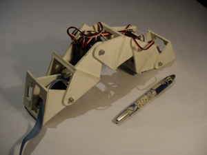
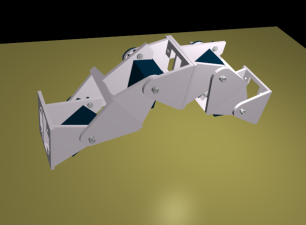
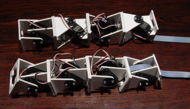
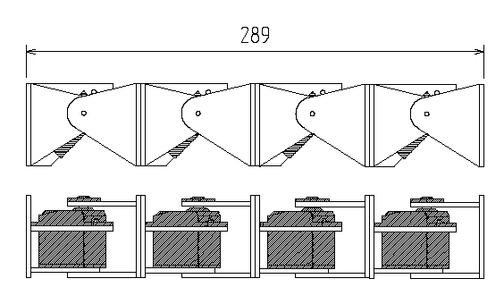
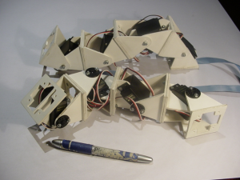
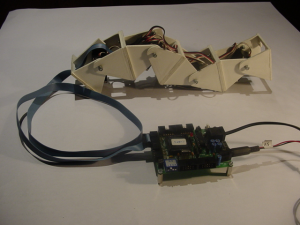
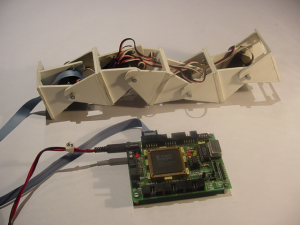
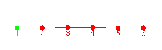
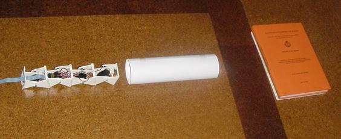
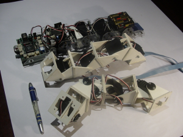

Introducción
|
Actualización:
01/Enero/2006: Publicada la versión siguiente del
robot: .Cube
Revolutions
|
Realizado
como parte del trabajo
de iniciación a la investigación
para la obtención
del DEA, en la E.P.S
de la UAM.
Se expuso ante el Tribunal de Estudios Avanzados en Junio del
2003.
Cube Reloaded
es un robot ápodo, capaz de avanzar en línea
recta sin utilizar patas, mediante movimientos sinusoidales de sus
segmentos. Es una versión mejorada de Cube
2.0.
Objetivos:
Hacer un gusano más modular y centrarse en la creación
de unos módulos que permitan crear robots modulares
reconfigurables. Esta es la primera generación en el
caminio hacia los robots ápodos modulares y reconfigurables.
En
este
vídeo se
pude ver una secuencia de movimiento. Un tren de ondas sinusoidales
recorren el gusano desde la cola hasta la cabeza, logrando que
avance. En este
otro vídeo,
Cube Reloaded se "pliega" sobre sí mismo.
Características
Robot
Abierto. Se ha publicado bajo una licencia abierta, que
permite su copia, modificación y distribución. Toda la
documentación y planos están disponibles. Todas las
herramientas empleadas en su diseño son libres.
Desplazamiento
por un plano. Cube Reloaded se ha configurando conectando los
Módulos
Y1 en
fase, de manera que sólo puede avanzar en línea
recta. Sin embargo, se pueden conectar desfasados, lo que
permite que se pueda mover siguiendo trayectorias dentro de un
plano. No se ha implementado todavía un software que
permita la generación de movimiento en un plano, pero ya es
mecanicamente viable. En la siguiente foto se puede ver a Cube
Reloaded, situado en la parte inferior y a Cube Larva, en la
parte superior. En este último los módulos están
desfasados.

Autores
Licencia
|

|
Este
proyecto tiene una licencia GPL. Todo el software,
documentación, hardware y estructuras mecánicas se
puede copiar, modificar y distribuir siempre y cuando se mantenga
esta nota.
Descargo de Responsabilidad. No me hago
responsable en ningún caso de los posibles daños o
pérdidas de garantía que pueda ocasionar el uso,
debido o indebido de la información contenida en este
proyecto.
|
Mecánica
Cube Reloaded
está construido a partir de 4 Módulos
Y1 conectados
en fase. Todos los planos se encuentra disponibles aquí.
Se han diseñado utilizando el programa QCAD
para Linux (también
disponible como paquete Debian).

Para
probar los módulos, se ha construido otra versión, Cube
Larva, formado por 4 módulos
Y1 desfasados.
En la parte superior de la foto se puede ver a Cube Reloaded y
en la inferior a Cube Larva

Electrónica
En Cube Reloaded
toda la electróncia se sitúa fuera del gusano lo
que permite experimentar con diferentes tecnologías. Se puede
controlar con la tarjeta
CT6811,
basada en el microcontrolador 6811 de motorola. En la foto de
la izquierda se puede ver a Cube Reloaded conectado a esta tarjeta.
Desde un ordenador conectado a la CT6811
a través del
puerto serie (RS-232) se envían las secuencias de movimiento.
También se
puede controlar desde la tarjeta
JPS ,
que incorpora una FPGA de tipo Spartan I (Ver foto de
la derecha). La FPGA permite utilizar diferentes alternativas. Se
puede emplear desde un circuito dedicado, hasta un microcontrolador
descrito en VHDL con una unidad de PWM "mapeada".


Puedes
encontrar más información aquí
Control I
Para el
posicionamiento de los servos
hay que generar una señal
PWM. Se puede realizar desde una FPGA o desde un microcontrolador.
En el artículo
"Alternativas Hardware para la Locomoción de un Robot
Ápodo", presentado en el JCRA 2003, se puede
encontrar más información sobre el control usando
FPGAs.
Los servos
se pueden posicionar
desde el PC, usando la versión 2.1 del programa
cube-fisico, un cliente del servidor Servos8
[Proyecto
Stargate],
a través del puerto serie. Se ha usado la implementación
de servos8
para la Tarjeta
CT6811.
Puedes
encontrar más información aquí
Control II
En este nivel de
control se resuelve el problema de la coordinación de las
articulaciones. Para ello se utiliza un gusano virtual,
sobre el que se aplica el modelo de movimiento basado en la
propagación de ondas sinusoidales.
Mediante el programa
cube-virtual (versión 1.4.2) se generan las secuencias
de movimiento, a partir de los parámetros de la onda
sinusoidal que queremos que recorra el gusano. Las secuencias se
almacenan en un fichero para luego ser reproducidas usando el
programa cube-fisico.
Cube Reloaded se puede
desplazar usando semiondas, con lo que se consigue un
movimiento más estable.

Puedes
encontrar más información aquí
Pruebas
En
uno de los experimentos realizados, Cube Reloaded tiene que atravesar
un circuito de pruebas constituido por un cilindro de cartón
de 8 cm de diámetro y un escalón de 3.5cm de alto.

Para el control se usó
la tarjeta
CT6811,
conectada al PC, donde un operador selecciona los patrones de
movimiento más adecuados para cada obstáculo
Puedes
encontrar más información aquí
Historia
El nombre de Cube
viene de la película de terror del mismo nombre. El apellido
"Reloaded" se ha tomado de la II parte de Matrix:
Matrix Reloaded. La siguiente versión será Cube
Revolutions, nombre inspirado en la III parte de Matrix: Matrix
Revolutions.
En esta foto se puede
ver a Cube 2.0 junto a Cube Reloaded y Cube Larva.

Puedes ver más fotos aquí
Download
|
tea.pdf(2,4MB)
|
"Diseño
de robots ápodos". Trabajo de iniciación a la
investigación. Julio 2003. Información sobre Cube
Reloaded y los Módulos Y1, entre otras cosas
|
|
tea-presentacion.pdf(1,8MB)
|
Presentación
del trabajo de iniciación a la investigación, en
PDF
|
|
tea-presentacion.sxi(4,3MB)
|
Presentación
del trabajo de iniciación a la investigación, para
OpenOffice
|
|
cube-crm-1.avi(1,9MB)
|
Cube Reloaded
Avanzando, con una onda sinusoidal de pequeña amplitud
|
|
cube-crm-4.avi(1,7MB)
|
Cube Reloaded
plegándose sobre sí mismo
|
Links
Noticias
1/Ene/2006:
Actualización. Añadido
enlace a la nueva versión: Cube
Revolutions.
22/Dic/2003:
Actualización: Añadido enlace al trabajo de iniciación
a la investigación Diseño
de Robots Ápodos
12/Dic/2003:
Publicado Cube Reloaded
IEA
ROBOTICS
Juan González